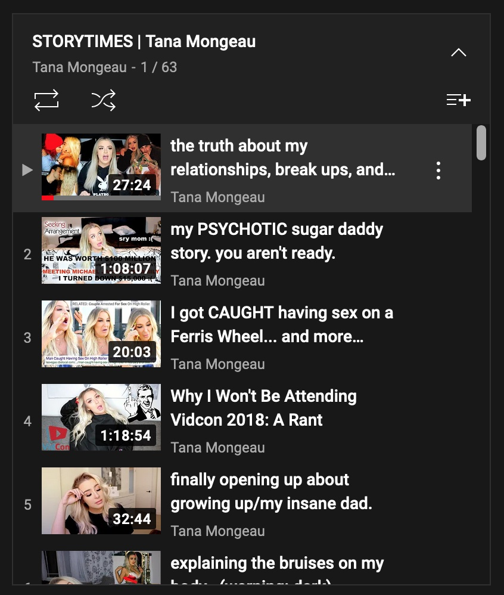

STORYTIME SCRIPT GENERATION
See full project github here.
 1. Concept
The storytime genre has become somewhat ubiquitous on Youtube, reaching the peak of its popularity in the mid to late 2010’s. The genre is still popular on Youtube, as well as on more short form video platforms such as TikTok or Instagram Reels. Videos generally consist of a speaker (or, at times, multiple speakers) monologuing about some supposedly true event that happened to them. Topics tend to be scandalous, covering relationships, sex, drugs, stalkers, crime, or “psycho” roommates, friends, siblings, etc.
To the right is a screenshot from the channel of a notable storytime youtuber, Tana Mongeau. Tana rose to fame by creating shocking or inflammatory videos. She currently has over 5 million subscribers on her Youtube channel, and has collaborated with major television studios in the making of her MTV reality show MTV No Filter: Tana Turns 21. She, along with many others, has been able to use this genre and its huge attention-catching potential to build a career and fanbase.
Notably, storytimes have extended to the realm of animations. One such channel is “My Story Animated”, in which subscribers supposedly send in stories that then get produced as animated videos. This channel posts videos almost daily, most of which reach millions of views, and has over 10 million subscribers. Removing the face from the story allows for a mass-production of such videos by what seems like is an animation studio, which has meant that this channel can reach levels that most individual Youtubers are unable to attain.
The genre has its own set of cliches, and has become comedically formulaic. From this, I felt like this would be a perfect candidate for a video that could be created with the use of machine learning. Storytime channels have been able to figure out to a tee what content attracts viewers. Videos can be repetitive, unrealistic, or otherwise strange and still gain millions of views by either those too young or too disinterested to seek more varied or more informative content.
2. Technique
In this project, I aimed to recreate one of these videos. The main idea was to be able to generate a script for this storytime, and then polish it and film the video. To do so, I planned to use a pre-trained text generation model that allowed for fine tuning. For this, I chose GPT3, or “Generative Pre-Trained Transformer, 3rd generation”, which uses deep-learning. As of September 2020, the source code for GPT3 is only accessible to Microsoft, meaning the algorithm can be used by others, but the code for it cannot.
I accessed the algorithm through the openai module using the beta fine-tuning feature. I put together a dataset of storytime scripts, matching a prompt to the script. This consisted of selecting some storytimes on Youtube and processing the auto-generated captions. I wrote a python script that removed unnecessary newlines, timestamps, and processed it into a json file format. The scripts also had to be divided into smaller sections. The prompt was a summarized term for the video’s content combined with which part of the script it is (“beginning of”, “middle of”, “end of”). After processing this data, the model was trained using a choice of base model. The base model I ended up selecting was davinci, which is the most powerful, but slowest and most expensive. Because the dataset I chose for fine tuning was not that large, the price point and speed of the davinci base model didn’t really pose a problem.
After fine tuning the algorithm, scripts can be generated from a given prompt. There is a set of parameters that can be adjusted such as max_tokens, which adjusts the maximum output length, or temperature, which controls how much risk is taken. Once the script is generated, I use it to record a Youtube video, in which I try to imitate the style of storytime Youtubers. I will also make a thumbnail in the signature style of storytime videos.
3. Process
For my dataset of storytime videos, I chose from videos by notable storytime creators, as well as a few popular recent uploads. Youtube provides a tool to access the closed-caption transcript of videos, along with timestamps for the point at which something is said. I copied these transcripts into a .txt file, after which I processed them to make legible transcripts.
The next thing I had to do was process these scripts into json files, which GPT3 fine tunes on. The script runs through the transcript files, dividing them into sections with length of at most 2048, and writes them into a json file. Below, you can see a bit of the resulting file. All the lines come from the same video transcript. The prompt differentiates between parts of the story. The goal for this was to be able to give me the ability to generate a storytime piece by piece, each one prompting the next, while still maintaining details that occur in given parts of the storytime (an introduction at first, asking listeners to subscribe at the beginning and end of the video). In the end, I had 83 lines in my fine-tuning data set.
After this, I began fine tuning the model. As mentioned earlier, I ended up choosing davinci. I also tried curie and ada, but felt davinci was best. When creating my openai account, I had a $18 credit awarded to me, and davinci only cost $6.24 to fine tune the model. The following command line generated the fine tuned model:
openai api fine_tunes.create -t
With this model, I began generating resulting scripts. This required me to run the following code
python3
>>> import os
>>> import openai
>>> openai.Completion.create(model=model_name, prompt="Start of boyfriend cheated",max_tokens=128)
where model_name was given after fine tuning my model. As the prompt, I tended to choose generic topics for storytime videos. The parameters I ended up adjusting most were max_tokens and temperature, although I did play around with a few more. What tended to work best for me was generating shorter introductions and endings and longer chunks for the middle. However, I also did play around with generating entire scripts from one call. These resulting texts tended to be much more cohesive as a story, but lacked a structured introduction or ending. I found that including these large chunks to have a good story, while also adding in a few shorter generated excerpts worked best. I discuss specific results more in depth in the next section. Additionally, I wanted to experiment with creating more fine tuned models. I chose to create a json file of just the first lines of each video script. I used this model to generate just the intros. I felt like this was warranted, as intros differ pretty significantly in content and style from the meat of a storytime video. The total cost of fine tuning this model was $0.2.
At this point, I had generated a handful of excerpts. I hand selected a few I found funniest to put together a somewhat cohesive script. I filmed this, along with a few more of the longer generated pieces. I ended up with a video around 20 minutes long, which is shorter than most real storytimes. However, I ended up editing it down somewhat significantly to 9 minutes for the sake of the project.. The resulting videos generally emulated the subject matter and style of conversation typical of storytime videos. However, there was still some left to be desired when it came to cohesiveness and general grammatical correctness. So, a shorter video had a higher chance of being cohesive. Additionally, when filming, I chose the “makeup storytime” genre, which occupied my hands and actions, and somewhat brought attention away from any of the discrepancies that came up in the stories. The actual creation of the video was strange, as I am not really familiar with filming and editing. Nonetheless, by imitating the mannerisms and stylistic choices of some popular storytime Youtubers, the result, in my opinion, evoked a quintessential storytime.
Additionally, I chose to create a thumbnail for my final video. Storytime thumbnails are often the butt of jokes about these types of videos, and I wanted to do the genre justice. These often feature screenshots, filters, emojis, and large bold text. Below are some genuine thumbnails, as well as the one I created.
4. Results
Below you can see some sample intermediate results for a curie model and davinci model, fine tuned on the same dataset. The chosen prompt was “Start of cheating sugarbaby”, and max_tokens was 256.
curie
and that whole I wouldn't be mad like I'm over it like I'm done like I'm healed you know like I'm good I get that people are like understanding and like always like trying to like find a way to make up for their mistakes so it's like I get that but like the [ __ ] cheaters be like no we're not gonna like try and make this up to you and like prove that this was all a [ __ ] mistake like you're so much [ __ ] smh like I'm you know also and I told this to justcheaters that this is sometimes you don't have like a choice and for everything for instance it was my younger sister's birthday about a month ago now that was a story for another time I was so high at the time oh my gosh I'm so scared like she was in the house my younger sister Kim was in the house and this was right around her birthday so like a lot of people were like in my younger sister's room and they would be like birthday cupcakes like all the cupcakes were like birthday cakes and so they asked me to like to do a birthday video like on my channel to do a birthday cake video so I will upload the link in this video description so you can watch it if
davinci
aren't you proud of these sweet things i did to make our lives better right so i'm thinking like oh he's finally snapping out of it which again says a lot about me for choosing this person over and over and over again because i am not just a victim i chose to be abused in this way i don't know why but every time that i come close to walking away something just pull the [ __ ] cord and i're like i have to be with this person again why can't i just be done with it and move on and why can't they do it after i'm done with them once and for all i'm just such an [ __ ]fixer i try to fix everything i try to make everybody happy i just i don't [ __ ] know why but i have to be the one that like makes other people happy i have issues so i'm sitting there thinking oh damien he just showed me how love somebody for a second before he goes back to being abusive again i didn't really know what else to do so i start limiting howwe come in contact because at that point he had been controlling me yelling at me you know threatening me like texting me all the time like it was getting out of control like i was uncomfortable
As you can see, both results certainly imitate human speech and carry a lot of elements present in storytime videos, but tend to lack some cohesion. A lot of this was mitigated by hand selection and minor editing in the video. The final video is a combination of two separate scripts I filmed, spliced together. Both of these scripts can be found in the github repository for this project.
To the left is the final video result.
Notably, one of the scripts had a repetition of “really” and “did not”, as you can see below.
“… I laid the law down too and I was like you cannotuse that word to me cuz it's really really really really really really really really really really really really really really really really reallyreally really really really really really really really really really really really really really really really really really really really really really really really really really reallyreally really really really really really really really really really really really really really really really really really really really really really really really really really really really really really reallyreally really really really really really really really really really really funny okay so I'm laughing so hard is he like I'm like oh yeah like while he's saying thisI'm like you called me your girlfriend like I have no idea why your calling yourself your boyfriend you only had one coffee together he goes youcalled me your boyfriend and I was like I did not I did not I did not I did not I did not I did not I did not I did not I did not I did not I did not I did not I did not I did not I did not I did not I did not I did not I did not I did not I did not I did not I did not I did not I did not I did not I did not I did not I did not I did not I did not I did not I did not I did not I did not I did not I did not I did not I did not I did not I did not I did not I did not I did not I did not I did not I did not I did not I go how can you do this he was verymad that I was not calling him my boyfriend so we continue the conversation and it literally was nothing else in the conversation and I'mlike…”
What surprised me about this was not just that the model got into these loops, but also that it ended up breaking out of it. After playing around with the model, it seemed like higher temperatures made it less likely to get stuck in this kind of loop.
Another very notable result I got was a particularly vulgar script. It was generated with the prompt "storytime " and max_tokens of 1024I filmed this but I did not want to put it up on Youtube, because of the nature of the content. However, I will provide the script in the github repository. This script consisted mostly of the narrator describing a romantic/sexual interest repeatedly attempting to “tickle their asshole”. Below is an excerpt from this script:
“...i told you that story that whole thing but i didn't mentiontotally normal story where he would continuously stick his fingers in my butt and then would like tryto finger me like i'm sitting there on the videochat and i'm like what are you doing and he was trying to like stick his finger in my butt and he wassticking it in and he was like tickling my asshole and people it's a ticklishplace it tickles for me tickles for some peoplei understand our tickle feels but he was sticking his finger in my butt like what are you doing andhe was trying to push it in out pull it and he's just like trying to like put his finger in there so i told himto stop and then he just started laughing andwas like oh i'm just playing i'm just playing…”
What impressed me about this script was
1. The script was remarkably cohesive. The entire text made sense in relation to itself, and it had narrative structure, describing interactions between the characters as well as differentiating between the attempts
2. It differed significantly from the dataset I provided for fine-tuning. I tried to somewhat stray away from the most scandalous and sexual storytimes, but this piece was the opposite. Even more interestingly, neither the word “tickling” or “asshole” was present in my fine-tuning dataset, meaning the data I trained on was deemed similar to some of the data the model was pre-trained on. So, the model was able to identify which similar terms could be present in a storytime type script from the general training data.
This script ends in a sequence of “really”s, which it does not break out of.
5. Reflection
Overall, I am very happy with the final result of this project. I think I was able to capture a lot of what I was looking for. My general idea was not to create a genuinely good, enjoyable piece of art, as I don’t consider Youtube storytimes good pieces of art. Rather, I wanted to explore and poke fun at the extremely formulaic nature of these videos.
The resulting video both emulates the style and content of storytime videos. From my experience watching the video, and the feedback of some peers whose opinion I asked for, it takes a while watching this video to understand that I am not talking about anything. The script is littered with common phrases you might see in storytimes (“hope you enjoyed the last video”, “go check it out end of like my youtube”, “if that sort of thing interests you please go to my youtube channel i'llg ive y ou like all the links”, “I'm so fed up with all these people to just like like I just don't wantto be around them anymore slut I'm so sick of their drama”), and makes general sense. As a result, the video seems genuine. The content it emules is already generally vapid and often follows very similar tropes, making it possible to trick viewers for longer. It follows the language of storytimes, making it blend in with the genuine content.
As a whole, storytimes have a huge money-earning potential. They are simple, cheap to film, and grab the viewers attention by using whatever scandalous terms necessary. An example that comes to mind is Tana Mongeau’s “I GOT BANGED WITH A TOOTHBRUSH: STORYTIME” , and subsequent sequel video. While these videos may be better than what I argue is their predecessor, tabloid newspapers (both use scandalous stories to attract public attention, whether or not accurate), as they mostly refer to actions of the storyteller or an anonymous third party, they still often fall into the trap of selling falsehoods as truths to the viewer, many of whom are children who are especially enthralled by this explicit content and less likely to distinguish between a true story and one that is exaggerated or made up completely.
6. Future Work
Ideally, there are a few things I would like to try as I keep exploring using machine learning to generate these video scripts. A source of inspiration for this project was Kurtis Conner’s “The Frightening World of AI Generated Content” , in which he discusses a variety of real and hoax AI generated pieces of media, as well as creates a short video himself. This, similarly, is trained on his own videos. Conner doesn’t go too in depth on his methodology (what model he uses, what prompts, etc), but he does mention that he found much more success using formal screenplays of his videos, rather than auto-generated captions. I think doing so for me would mitigate some of the problems I faced with incorrect grammar and run on sentences. I tried to fix it somewhat in my intonation while filming, but the problem persisted. I had not implemented this in my project for two reasons. First, getting professional screenplay type transcripts of a Youtube video is time consuming and expensive. I did not feel like the result would be enough of an improvement that this was warranted. Secondly, Conner’s video style is commentary and skit based, and he utilizes a lot of editing and collaborations in his videos. This meant that the stage directions present in screenplays but not in subtitles were very important for him to get a good result. Storytime videos, however, don’t have these elements. Most of their information is delivered as a monologue, making stage directions less important.
However, I do still think that better edited transcripts would be helpful, especially in the punctuation department. This is something I could even do myself, manually, even if it is fairly time consuming. I also think I could find improvement by setting up better prompt labeling would be helpful, and I plan to continue exploring this, both through manual labeling and possibly mechanized processes - like machine learning generated summaries or using the first few words of a text as a prompt. I would also like to try generating scripts that can make 30+ minute videos, as storytime videos generally are, and seeing how much a common thread is carried throughout.
Working on this project also inspired me to consider similar Youtube genres and the potential to generate these. One of the most interesting, to me, is makeup tutorials. I think there is a lot of potential in trying to recreate generated instructions for putting on makeup. In some ways, this would be an intersection between this storytime genre, as makeup tutorials often contain tangents or discussions of other topics, with robots that paint with the help of instructions generated by AI.
Finally, something I really would like to try to polish off this project was using ml in some other aspects of these videos. The two ideas that come to mind are generating Youtube titles and thumbnails for these videos. I would like to try generating titles given the full script as input, or vice versa, where I generate titles, which I then use as prompts. As for thumbnails, I just think it would be an interesting touch. I would like to both have the entire image be generated, but I would like to try generating aspects of the image, which I can combine. Elements I would generate would be the emojis used, facial expressions, and text on the thumbnail. I would like to use the script as input for these.
Works Cited
Hao, Karen. “OpenAI Is Giving Microsoft Exclusive Access to Its GPT-3 Language Model.” MIT Technology Review, MIT Technology Review, 23 Sept. 2020, https://www.technologyreview.com/2020/09/23/1008729/openai-is-giving-microsoft-exclusive-access-to-its-gpt-3-language-model/ .
Hayes, Dade. “Viacom Digital Studios Slate Features Tana Mongeau, Eva Gutowski, SpongeBob – NewFronts.” Deadline, Deadline, 29 Apr. 2019, https://deadline.com/2019/04/viacom-digital-studios-slate-features-tana-mongeau-eva-gutowski-spongebob-newfronts-1202602961/ .
Videos used in training, as titled in their txt files in github:
boyfriend cheated on me in a foursome
my creepy stalker
boyfriends sugar daddy
i cheated on my boyfriend
psycho ex best friend
spirit flight attendant screamed at me